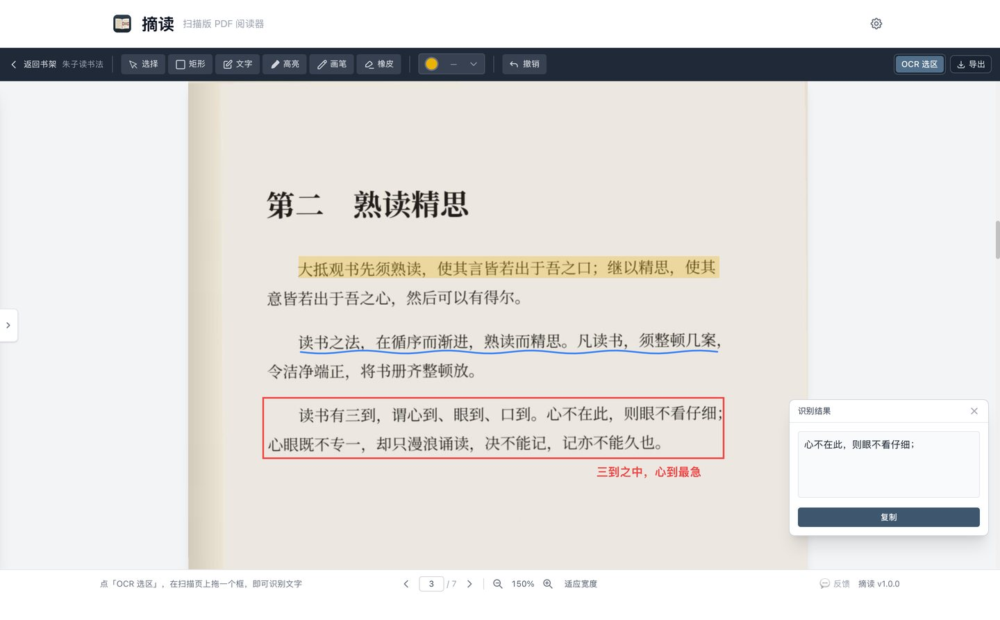
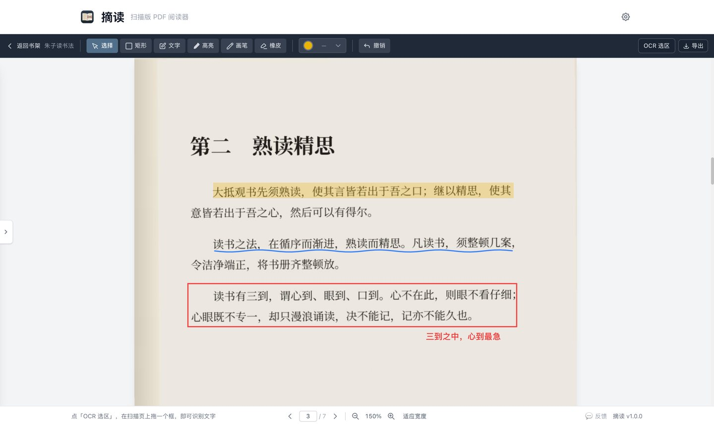
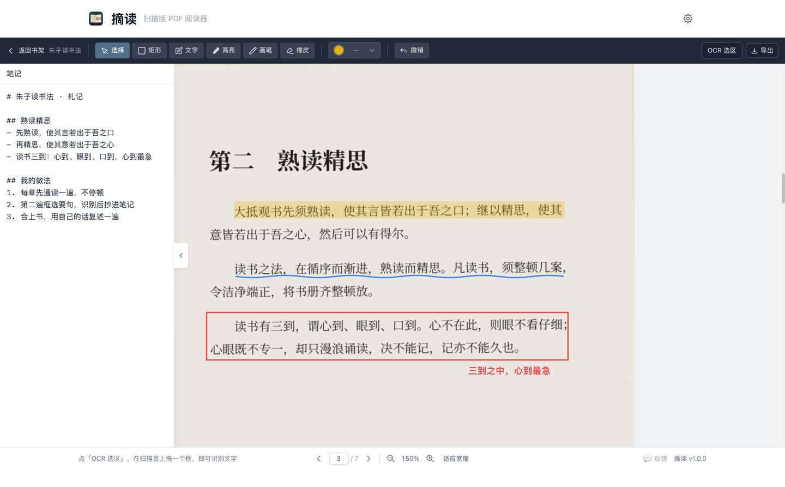
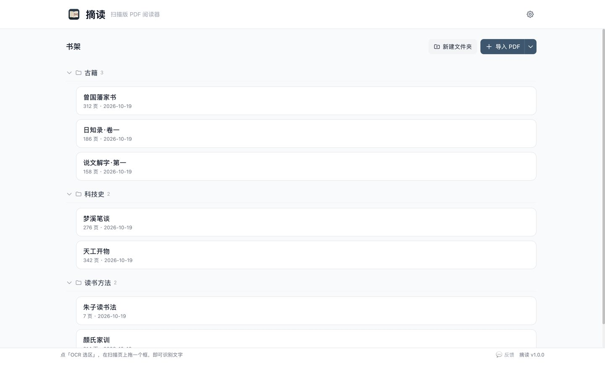

macOS 12+ · 完全离线 · 免费
扫描版 PDF，
也能好好读。
图书馆扫来的影印本、老教材、旧书的 PDF，页面都是图片——字选不中、搜不到、抄起来费时间。 摘读让你直接在页面上框一段，几乎立刻得到可编辑、可复制的文字。
即将上架 Mac App Store。现有功能全部免费，以后也免费。

四件事，做到底
框选识字
在扫描页上拖一个框，即可识别框内文字。用的是 macOS 内置的文字识别，简体中文、繁体中文、英文都能认。 识别在你的 Mac 上完成，书页图片不会离开电脑。
批注
高亮、矩形框、画笔、文字批注、橡皮擦，像在纸书上做标记。自动保存，随时撤销。 可以导出带批注的 PDF，全部页、当前页或指定页码范围都行。

笔记
每本书一份笔记，和原文并排打开，支持 Markdown。

书架
文件夹分类，拖动整理。自动记住每本书读到哪一页、缩放多少，下次打开接着读。 触控板双指缩放，以手指位置为中心放大缩小。

隐私
- 书、批注、笔记都只存在你自己的电脑上。
- 识别在本机完成，不联网，书页图片不会上传。
- 不需要账号，没有广告，不收集任何数据。
详见 隐私政策。
价格
完全免费。现有功能全部免费，以后也免费。 将来可能推出付费的进阶功能，已经免费的功能不会收回。
想要什么功能，可以在 App 里点「反馈」勾选投票，或直接写邮件给我。
常见问题
支持竖排古籍吗？
暂不支持竖排文字的识别。横排的影印本、教材、论文都没问题。
能整本书搜索吗？
暂时不能。现在的搜索是按书名，还没有做全文检索。
除了 PDF 还能读什么？
只有 PDF。图片、EPUB、Word 都还不支持。
我的书和笔记存在哪？
默认在 ~/Library/Application Support/com.mathster.SnipRead/，
App Store 版在沙盒容器里。可以在「设置 → 数据」里更换位置，书和笔记会一起迁移。
换电脑怎么办？
把那个数据文件夹整个拷过去，再在设置里指过去就行。
还需要帮忙？
安装、权限、数据迁移的问题都在帮助与支持里，也可以直接写信。